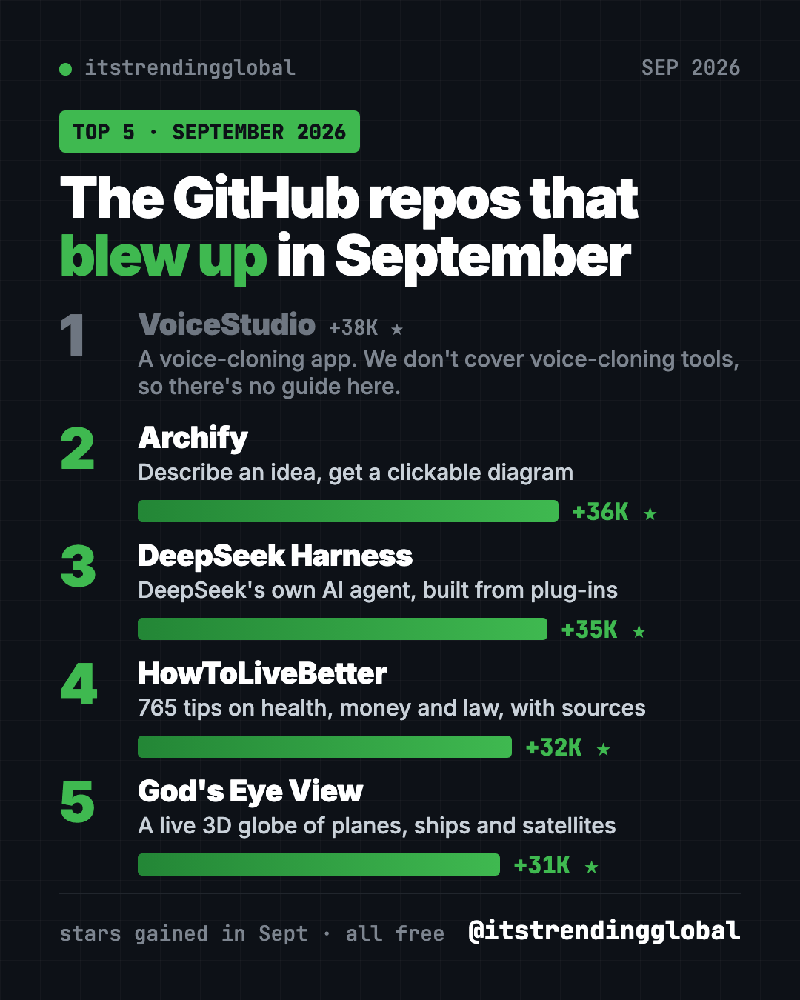
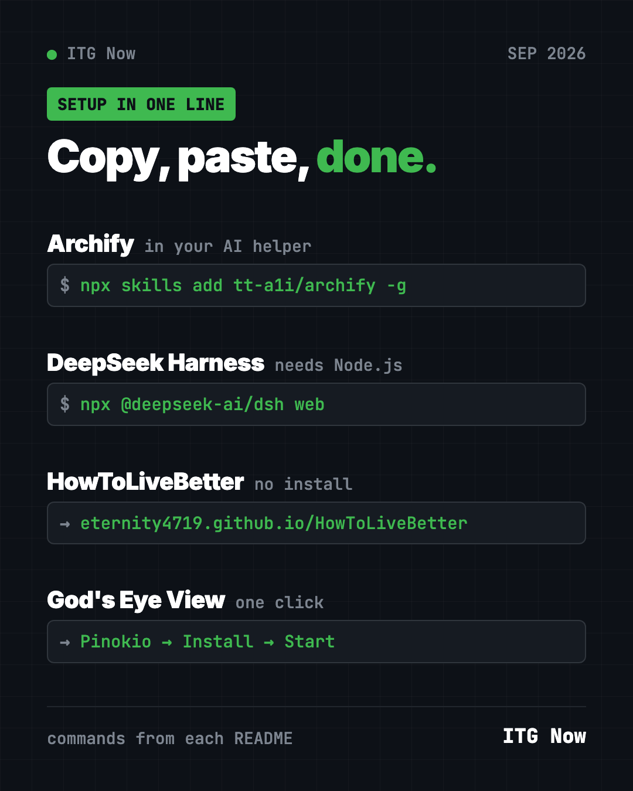

Best GitHub Repos of September 2026 (Free AI Tools)
The best GitHub repos of September 2026: free tools for AI diagrams, an AI agent, sourced life advice and a live 3D globe, explained simply.
The best GitHub repos September 2026 had to offer were Archify, DeepSeek Harness, HowToLiveBetter and God's Eye View. All four are free, open source, and gained more than 30,000 GitHub stars each in a single month. The month's #1 by stars was a voice-cloning app, and we don't cover those, so it only appears in the ranking table.
A GitHub star is like a bookmark or a "like." When thousands of people star a project in a few weeks, it usually means it does something people really want. This is a hands-on guide: for each one you get everyday ideas, the exact setup command, and a prompt you can hand to an AI helper so it does the setup for you.
Key takeaways
- Archify turns a plain sentence into a diagram you can click and explore.
- DeepSeek Harness is the official AI agent from DeepSeek. It is still an early "developer preview."
- HowToLiveBetter is not software. It is a free, sourced guide to health, money and law, written in Chinese.
- God's Eye View puts live planes, ships, satellites and earthquakes on a 3D globe in your browser.

The 5 best GitHub repos of September 2026 at a glance
| Rank | Repo | Stars in Sept | What it does | Who it's for | Free? | Platforms |
|---|---|---|---|---|---|---|
| 1 | VoiceStudio | +38K | A voice-cloning app. We don't cover voice-cloning tools, so there's no guide here. | n/a | n/a | n/a |
| 2 | Archify | +36K | Turns ideas or code into clickable diagrams | Anyone who explains plans, teachers, developers | Yes (MIT) | Works inside Cursor, Claude Code, Codex, OpenCode |
| 3 | DeepSeek Harness | +35K | DeepSeek's AI agent where every feature is a plug-in | Tinkerers and developers | Yes (MIT), AI model use may cost money | Any computer with Node.js, runs in your browser |
| 4 | HowToLiveBetter | +32K | 765 life tips on health, money and law, each with sources | Chinese readers, anyone who wants evidence-based advice | Yes (CC BY 4.0) | Web page, PDF, EPUB |
| 5 | God's Eye View | +31K | Live 3D globe of planes, ships, satellites and more | Map lovers, space fans, curious people | Yes (MIT), some optional keys are paid | Windows, macOS, Linux, in your browser |
Star gains are for September 2026 only. Total star counts below were checked on GitHub on October 15, 2026.
💡 Tip: Some steps below use the "terminal." That is a plain text window where you type commands. On a Mac, open the app called Terminal. On Windows, open PowerShell. You paste a line, press Enter, and wait.
1. Archify: describe an idea, get a clickable diagram
Stars: +36K in September · about 84K total
What it is: Archify is a free "skill" for AI coding helpers. A skill is a set of instructions an AI follows for one kind of job. Archify's job is diagrams. You describe something in plain words, and your AI helper builds an interactive diagram you can click, explore and share as a single web page. Anyone can open it in a browser.
Who it's for: Anyone who has to explain a plan or a process. Teachers, students, project managers, and developers who want a map of their code.
How you'd use it:
- Map out a family trip: days, cities, trains and hotels in one clickable picture.
- Make a learning map for a new subject, from basics to advanced topics.
- Show your team how a new process works, step by step, without drawing boxes by hand.
Install it: Archify is itself a skill, so you install it into your AI helper (Cursor, Claude Code, Codex CLI or OpenCode). Copy and paste this:
npx skills add tt-a1i/archify -g
Or let Claude or Codex do it: Once it is installed, just ask. Here is the README's own example, ready to paste:
Use Archify to diagram a web request: Browser calls the API,
the API checks Redis, and a cache miss queries PostgreSQL and fills the cache.
Swap in your own idea, like "Use Archify to map my 5-day trip to Japan." Then keep going: "Highlight this path" or "Switch to the light theme."
Archify itself is free. The AI helper you use with it may have its own cost.
See Archify on GitHub · Read the full guide
2. DeepSeek Harness: DeepSeek's own AI agent you can rebuild
Stars: +35K in September · about 250K total
What it is: DeepSeek Harness, or "dsh" for short, is a free AI agent made by DeepSeek AI, the lab behind the DeepSeek models. An agent is an AI helper that does not just chat. It can take actions, like reading files and running commands. Its big idea is "everything is a plugin." A plugin is an add-on piece, and every feature can be removed, swapped, or replaced with your own. You use it through a web page in your browser.
Who it's for: Tinkerers, developers and students who want to see how AI agents work, or build their own add-ons.
How you'd use it:
- Point it at a project folder and ask for a plain summary of what is inside.
- Have it tidy up or rename a messy folder of files, approving each step.
- Learn how agents work by turning features on and off and watching what changes.
Install it: First install Node.js, a free program from nodejs.org. Then copy and paste this:
npx @deepseek-ai/dsh web
A web page opens in your browser. Connect a model, such as a DeepSeek API key (a password-like code that lets the app use DeepSeek's AI), pick a folder, and give it a task.
Or let Claude or Codex do it:
Set up DeepSeek Harness on this computer from
https://github.com/deepseek-ai/deepseek-harness.
First summarize its SAFETY.md for me in plain words.
Install Node.js if it is missing, start the web UI with "npx @deepseek-ai/dsh web",
and walk me through connecting a model and running one safe first task.
⚠️ Heads up: The README calls this a "developer preview" and warns, in capital letters, that changes will break things. Read its safety notice first. Using a DeepSeek API key may cost money.
See DeepSeek Harness on GitHub · Read the full guide

3. HowToLiveBetter: a sourced guide to health, money and law
Stars: +32K in September · about 64K total
What it is: HowToLiveBetter is a free online book, not an app. It was only created on GitHub on September 7, 2026, and still made the top 5 for the month. It holds 765 pieces of advice on living longer, first aid, saving money, avoiding scams, legal red lines, help after losing a job, marriage, raising kids and starting a business. Each tip says what it costs you, what you get back, and how strong the evidence is. The author only cites journal papers and official documents.
Who it's for: People who read Chinese and want practical, evidence-based life advice. The legal, health insurance and social security parts follow mainland China's rules, so those fit people living there best.
How you'd use it:
- Check whether a health habit, like a supplement or a checkup package, is worth the money.
- Take the yes-or-no "life self-check" quiz to see which easy wins you have not done yet.
- Look up what help you can claim if you lose your job (based on mainland China's rules).
Install it: No install needed. Open the online search page in your browser. Use your browser's translate button if you do not read Chinese. You can also download it as a PDF or EPUB from the README.
Or let Claude or Codex do it: The project ships a skill that makes an AI helper answer from the book and say which section each answer came from. For Claude Code, copy and paste this:
mkdir -p ~/.claude/skills/life-decision-guide && curl -fsSL -o ~/.claude/skills/life-decision-guide/SKILL.md "https://raw.githubusercontent.com/eternity4719/HowToLiveBetter/main/skills/life-decision-guide/SKILL.md"
For Codex, the README uses this instead:
mkdir -p ~/.agents/skills/life-decision-guide && curl -fsSL -o ~/.agents/skills/life-decision-guide/SKILL.md "https://raw.githubusercontent.com/eternity4719/HowToLiveBetter/main/skills/life-decision-guide/SKILL.md"
Then ask a real question, and ask for the answer in English:
Use life-decision-guide to answer in English: is a two-hour daily commute
worth it for a higher salary? Tell me which section and item you used.
The README notes the content may be out of date or wrong. For real legal or medical problems, follow your local officials, doctor or lawyer. Community translations, including English, are linked in the README but kept up by other people.
4. God's Eye View: watch the world live on a 3D globe
Stars: +31K in September · about 57K total
What it is: God's Eye View is a 3D globe that runs in your browser. It shows live aircraft, ships, satellites, earthquakes, weather and public cameras in one place. Its README describes it as a spy satellite simulator, except the data is real and public. You can click a plane to follow it, ride along in a cockpit view, switch to night vision or thermal looks, and even talk to it by voice.
Who it's for: Anyone who loves maps, planes, ships or space. Also teachers who want to show how the world moves in real time.
How you'd use it:
- Follow a friend's flight across the ocean, live.
- Ask when a satellite will next pass over your town, and whether you can see it.
- Show a class live earthquakes and storm tracks on a real globe.
Install it: The one-click way: install or update Pinokio (a free app that installs AI tools for you) to version 8.2 or later. Open God's Eye View in Pinokio, click Install, then Start. Prefer the terminal? You need Node.js 24 or 26. Copy and paste this:
git clone https://github.com/bilawalsidhu/gods-eye-view.git
cd gods-eye-view
npm ci
npm run doctor
npm run dev
Then open http://localhost:4173 in your browser.
Or let Claude or Codex do it:
Install God's Eye View on this computer from
https://github.com/bilawalsidhu/gods-eye-view following its Quick Start.
Check my Node.js version first. Start it without any API keys,
open it in my browser, and show me how to track a live flight.
💡 Tip: You can start with no account and no keys. Flights, satellites, earthquakes and public cameras work right away. Photorealistic 3D cities need a free Cesium ion token or a Google Maps key, and voice control uses OpenAI, which is paid per use.
Which one should you try first?
- You explain plans or ideas to other people: try Archify. It is easiest if you already use an AI coding helper.
- You want to learn how AI agents work: try DeepSeek Harness. Be ready for some setup and a few bugs.
- You want practical life advice backed by research: read HowToLiveBetter. No install, just a browser.
- You just want something fun to look at: open God's Eye View. It is the easiest way to "wow" a friend.
Brand new to all this? Start with God's Eye View or HowToLiveBetter. They need the least setup.
For the bigger picture, read September 2026 in AI. You can also compare with August's top repos or see the 5 biggest GitHub repos of Q3 2026.
FAQ
What were the best GitHub repos of September 2026?
By stars gained, the #1 spot went to a voice-cloning app we don't cover. Next came Archify, DeepSeek Harness, HowToLiveBetter and God's Eye View, each with about 31,000 to 36,000 new stars.
Are these GitHub repos really free?
Yes. All four we cover are free and open source. Some can connect to paid services, like an AI model for DeepSeek Harness or OpenAI voice control in God's Eye View, but those depend on what you choose.
Do I need to know how to code to use them?
No. HowToLiveBetter is a website, and God's Eye View installs in one click with Pinokio. For the rest, you can paste our ready-made prompt into Claude Code or Codex and let it do the setup.
Is HowToLiveBetter available in English?
The original is in Chinese. The README links to community translations, including English, but those are maintained by other people and may lag behind.
What does "stars gained" mean?
A GitHub star is like a bookmark or a like. Stars gained is how many new stars a project got during the month. It is a good sign of what people are excited about right now.
Want a new free tool explained every day? Follow @gittrendingglobal on Instagram.
Keep reading

Trending GitHub Repos October 2026: The Top 5 So Far
The trending GitHub repos of October 2026 so far: a free Photoshop-style editor, an AI art studio, a big AI model for gaming PCs and more, explained.

Trending GitHub Repos This Week, Oct 5 2026: The Top 5
Trending GitHub repos this week Oct 5 2026: Matt Pocock's skills, the openGym workout tracker, e2e testing, HyperFrames video and claude-mem memory.

GitHub Trending September 28, 2026: Hindsight and Paperclip
GitHub trending September 28 2026: Hindsight, Paperclip, NVIDIA's OpenShell and a free 542-lesson AI course, with setup steps for each.